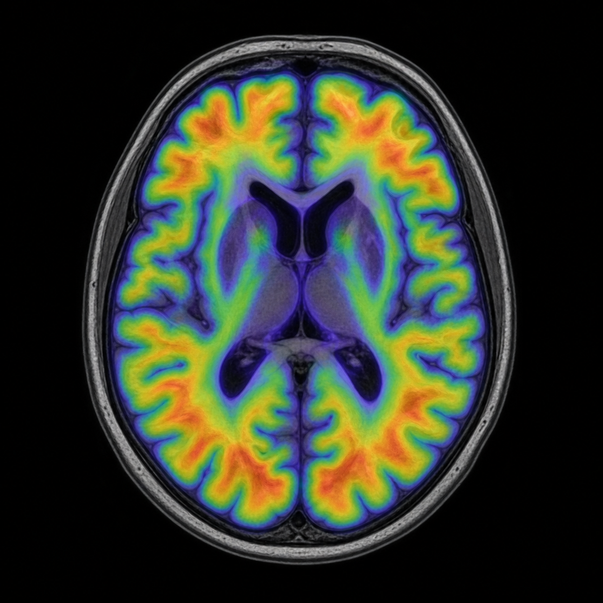

AI in Medical Imaging · Healthcare Data
From neuroimaging quantification and digital twins to surgical vision and trustworthy clinical data pipelines.
# Featured Work
Methods for amyloid PET quantification: without MRI, under head motion, and with deep-learning parcellation.
Centiloid on PET/CT when no MRI is available. Trained with synthetic CT, it matched the MRI reference within a ±5 Centiloid equivalence margin.
Uses the tracer’s own white-matter uptake to re-align simultaneous PET/MR frames after head motion.
MR-based deep-learning parcellation for amyloid PET, checked against FreeSurfer ROIs.
# About
I am a Postdoctoral Researcher at NYCU’s Digital Medicine and Smart Healthcare Research Center, working on AI in medical imaging and healthcare data. The path began with family members affected by neurodegenerative disease — and grew into building trustworthy clinical AI across neuroimaging, surgical vision, and privacy-aware data systems.
Read my story# Research Focus
AI in Medical Imaging & Healthcare Data — three lenses, one practice.
# Tutorials
Classroom MRI notes — short learning notes from the teaching pack
Spin is an intrinsic property, not a tiny sphere literally rotating.
2026·08·28 · Magnetic momentμ behaves like a tiny magnet, tending to align with B0.
2026·08·30 · Larmor precessionμ traces a cone around B0—that motion is Larmor precession.
Collaboration, hiring, or just hello — pick an intent on the contact page.
Get In Touch